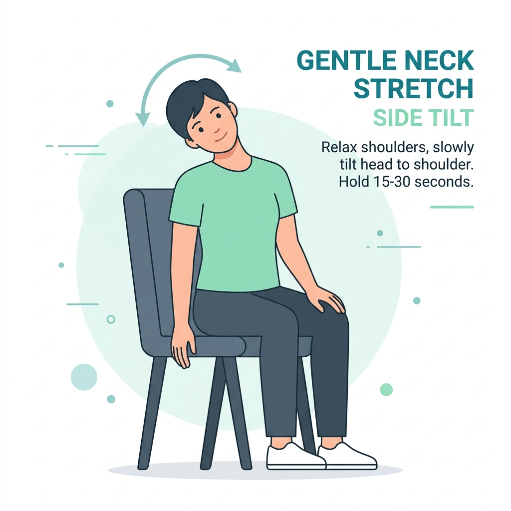
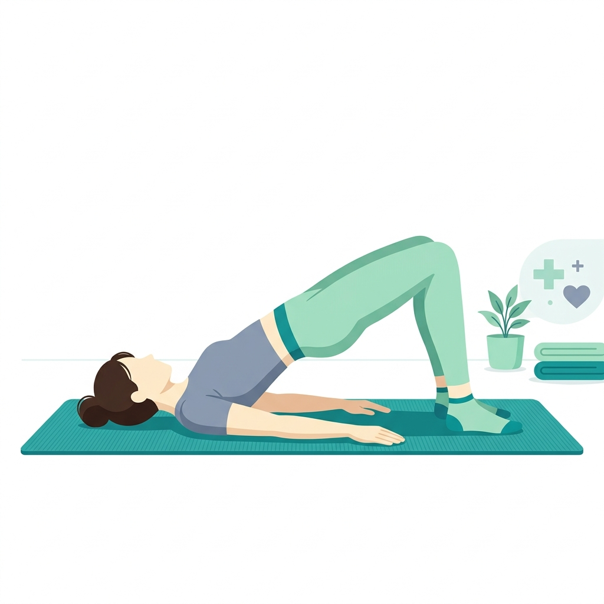

Método prático para realizar em casa sem equipamentos
Realize os movimentos de forma lenta e controlada. Mantenha a respiração fluida e relaxada pelo nariz. Se em algum momento sentir dor aguda ou pontada forte, interrompa o exercício imediatamente.
Módulo 1: Alívio da Coluna Lombar
Foco em aliviar a compressão sobre as vértebras inferiores e alongar o quadrado lombar.
1 Torção Suave de Quadril
Posição inicial: Deitado de costas em uma superfície firme, joelhos dobrados e pés planos no chão.
Execução: Abra os braços em formato de "T" nas laterais. Deixe ambos os joelhos caírem lentamente para um dos lados, mantendo os dois ombros firmes no chão. Respire fundo 5 vezes nessa posição. Retorne ao centro e faça para o outro lado.
⏱ Duração sugerida: 2 séries de 45 segundos para cada lado.

2 Postura do Gato e Vaca
Posição inicial: Em quatro apoios (mãos na linha dos ombros e joelhos na linha dos quadris).
Execução: Ao inspirar, empurre o peito para frente e deixe a barriga descer em direção ao chão, olhando sutilmente para cima (Vaca). Ao expirar, curve as costas para cima em direção ao teto, empurrando o chão e trazendo o queixo ao peito (Gato).
⏱ Duração sugerida: 10 repetições completas de respiração.
Módulo 2: Liberação Cervical e Escapular
Focado em aliviar as dores acumuladas no pescoço e a rigidez provocada pelo uso prolongado de telas.
1 Alongamento Lateral de Pescoço
Posição inicial: Sentado ou em pé com a postura alinhada.
Execução: Incline a cabeça lateralmente, tentando aproximar a orelha direita do ombro direito. Apoie a mão direita levemente sobre a cabeça para dar um peso suave (sem puxar). Deixe o braço esquerdo relaxado ao lado do corpo.
⏱ Duração sugerida: 30 segundos de cada lado.

2 Extensão Torácica na Cadeira
Posição inicial: Sentado em uma cadeira com encosto médio ou baixo.
Execução: Coloque as mãos atrás da cabeça com os cotovelos bem abertos. Apoie a parte média das costas no encosto da cadeira e incline suavemente o tronco para trás, olhando para o teto para abrir o peitoral. Mantenha por 3 respirações profundas e retorne.
⏱ Duração sugerida: 5 repetições.
Módulo 3: Fortalecimento Articular (Joelhos e Quadril)
Foco em reestabelecer a força de sustentação e estabilidade das pernas, quadril e região pélvica.
1 Ponte Pélvica Corporal
Posição inicial: Deitado de costas com joelhos flexionados, pés apoiados no chão e braços estendidos ao longo do corpo.
Execução: Contraia os glúteos e abdômen e eleve o quadril em direção ao teto, alinhando coxa e tronco. Segure no topo por 2 segundos e retorne lentamente, quase tocando o chão antes de subir novamente.
⏱ Duração sugerida: 3 séries de 12 repetições.

Selecione a opção "Salvar como PDF" no destino de sua impressora para guardar o arquivo digital.